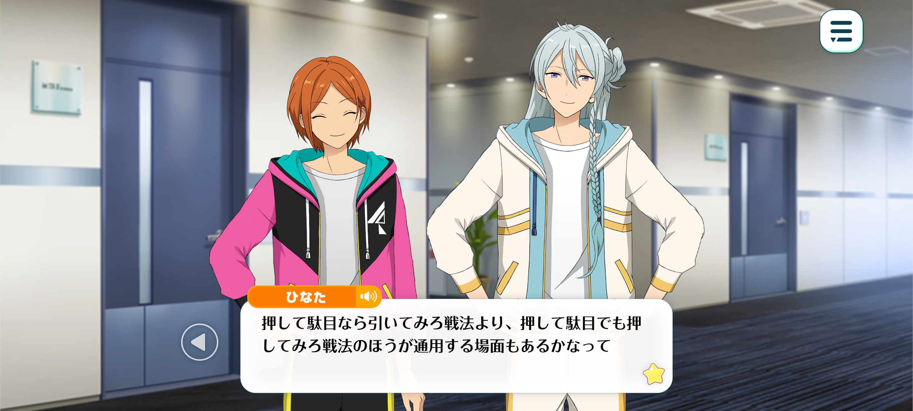
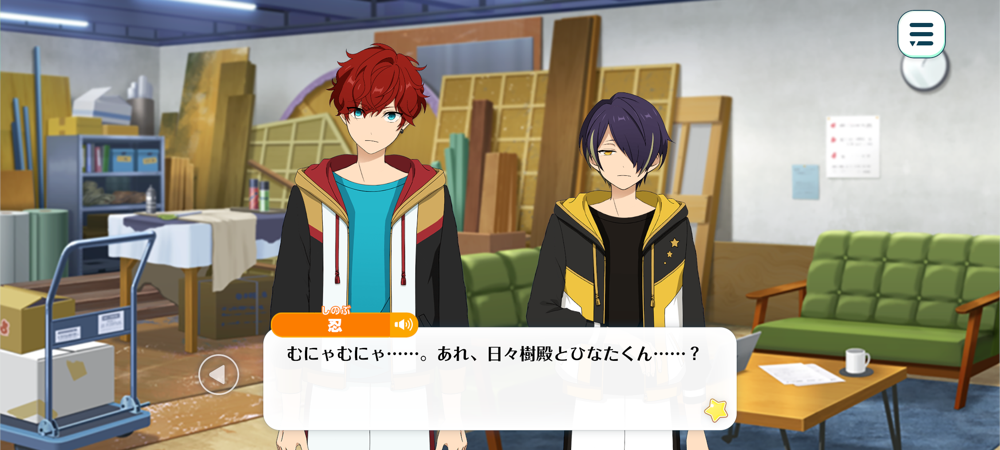
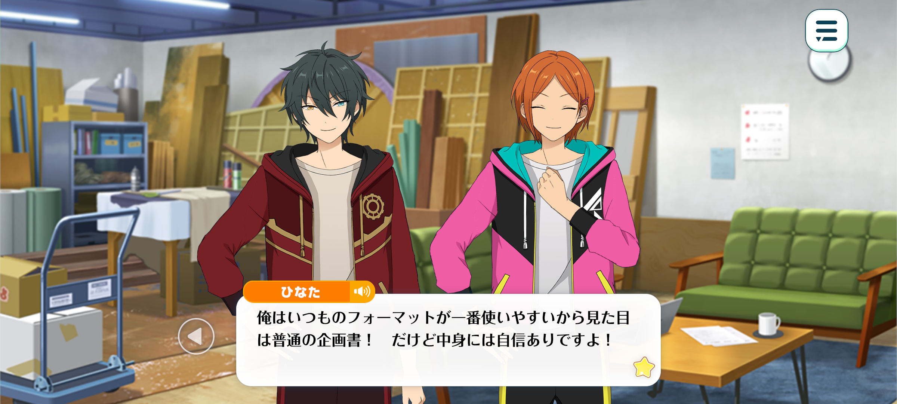
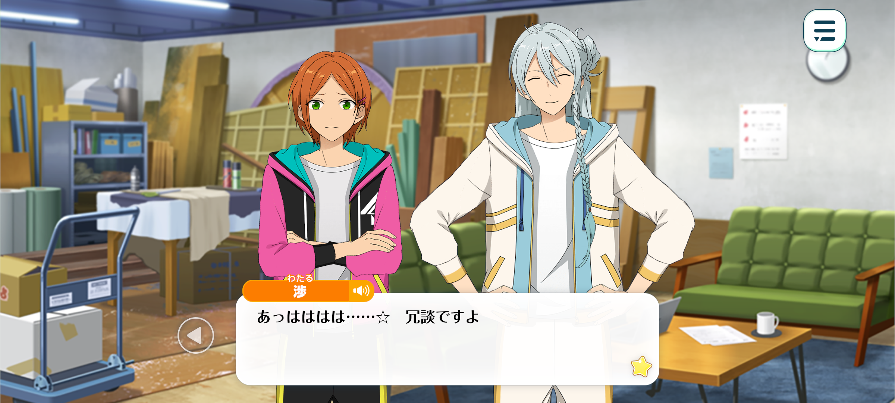

Easter To You
⌒Wonderful 2⌒



Wataru: We really did hold hands all the way here, didn't we? My, Hinata-kun, you certainly are a persistent one.
Hinata: Well, you know what they say: if you can't push, then pull! Though I guess there are other situations where that kind of strategy might work better...
...Anyway! There's something we wanted to show you today.
Wataru: ?
Hinata: Sorry to keep you waiting, everyone! Thanks for wai…
Huuuh…!?
Wataru: (Whispering) ….Hush now. It seems everyone's asleep.
Hinata: (Whispering) You're right. That sofa's a little small for everyone to be squeezed together like that though...
(Whispering) Sweet dreams, everyone.
Wataru: (Whispering) ...Just as I thought. Everyone really is exhausted. It was unreasonable of me to have them doing lessons every single day.
Hinata: (Whispering) Well... I mean, didn't you already suspect we might be pushing ourselves too hard during lessons?
Wataru: (Whispering) You could say that. I did consider that you might all be feeling the strain. But it's reached the point where even those close to you have started expressing concern...
(Whispering) You've all made such remarkable, visible progress in such a short time. It's only natural that you'd be exhausted.

Hiiro: Hnn, umu……?
We all fell asleep….without even realising it. We were only going to sit down and take a little break.
Shinobu: Mimimi…. Oh, Hibiki-dono and Hinata-kun…?
Mika: Nna~? Oh, yer right. It is you two. Welcome back~...
Hinata: We're back~... Sorry we're late. I got caught up talking with Hibiki-senpai.
Shinobu: We must apologise for dozing off. We had no intention of falling asleep...
The box containing all the capsules is over there, and we've laid out all the supplies on that desk! ♪
Mika: First, we should sketch out some designs with a pen and paper. Let's all make some real cute Easter eggs! ♪
Hinata: —Ahem, ahem.
Thanks for getting everything ready, you guys! But... don't you have something else you need to prepare?
Shinobu: !
Mika: !
Hiiro: Oh, that's right! That's why we split into a group of two and a group of three.
Wataru: ? Wasn't that simply because two of us were needed to carry the boxes to the Prop Room, while the others went to gather the supplies?
Hinata: That's true, but that wasn't the only reason... Earlier, we said there was something we wanted to show you, remember?
That's why I split everyone into two groups. I didn't want you to figure out what we were up to!
Ta-dah! Please take a look!

Hiiro: Fufu. This is the first time I've ever made a notebook specifically for brainstorming a project! It was so much fun adding a little more to it each day.
Shinobu: I got so carried away that I ended up putting together a written proposal! I drew on everything I've learned from working on the Student Council to make sure it was absolutely perfect! ♪
Mika: I put together a plan fer the costume accessories I'm gonna make with Anzu-chan. Everyone gets to pick which ones they like best! ♪
Hinata: At first glance, this might look like your bog-standard proposal, nothing out of the ordinary! But I'm pretty confident you'll be impressed by what's inside!
Wataru: These are…
Proposals for our activities during the Easter Fes, and ideas for our costumes...
So this is what you've all been working on. No wonder you've been so tired every day. When did you find the time to do all this?
Hinata: You're the one leading us towards the Easter Fes, so we started wondering what we could do for you, senpai...
Hiiro: We wanted to work on things other than our performance, too.
Shinobu: I don't have much free time each day, so I must admit I've been getting rather less sleep than usual.
I kept finding myself yawning, and I even made Shinkai-dono worry about me...
Mika: I even nodded off while I was on the phone t'Oshi-san. I must've been usin' up too much brainpower thinkin' up designs...
Hiiro: And we had lessons on top of all that, so it wasn't easy. But thinking about all this was definitely fun.
I didn't know very much about Easter to begin with, but making these plans helped me learn more about it.
I wanted to show you everything sooner, if I could. But I didn't want to say anything while I was still having so much fun at our lessons.
Mika: But today was our day off, right? So we finally had the chance t'get everything finished.
When Hinata-kun said "prepare", that was our cue. That's how we managed to get everything together without you findin' out.
Wataru: Ahh, I see... So it wasn't just the lessons that were wearing you all out...?
This was something I never would have imagined. You've all been taking the initiative and working on this yourselves for quite some time...
…
…I was unaware that I was the only one being left out.
Shinobu: Huh!? N-no, that's not it at all! We never meant to make you feel that way!
Hiiro: Y-yeah, that's right! We only kept it a secret because we didn't want to burden you with even more work...!
Mika: Nghaa, that's exactly it! We just wanted t'show ya how grateful we are fer all the lessons!
Hinata: Just like you said, I thought we were supposed to be playing the role of your juniors...!

Wataru: Ahahahaha…☆ I jest.
Hinata: …Eh?
Hiiro: …Eh?
Wataru: To be caught off guard so easily would be quite a disgrace for an entertainer. Though I suppose that was a little mean of me.
I was being rather childish... Let's call it even.
Thank you, everyone, for all the effort you've put into the Easter Fes, and for everything you've done for me.
From now on, I shall... I shall fly alongside you all, and walk at the same pace. I hope you'll welcome me as one of your own.
Shinobu: Waaah!? Hibiki-dono's palm is sparkling...!
Mika: Ah, there're Easter eggs! The colourful foil's all shiny~! ♪
Hiiro: Is there… chocolate inside? They smell sweet.
Hinata: Are we allowed to have one? If so, I'll take the pink one~!
Wataru: This gift is long overdue. A little token of friendship, from me to all of you.
Once you've finished eating these, let's paint some Easter eggs together. Let's all get along from here on out...♪